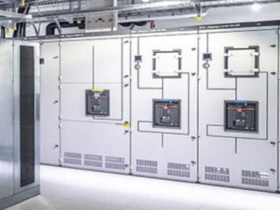

Network control
Maintain plant status, boundaries and operational configuration.

Powertec Utilities Ltd
Specialist HV operational control, SAP and electrical safety capability for European data centre commissioning.
Large-scale data centre commissioning involves multiple specialist contractors working across interconnected electrical systems at different stages of completion. Clear operational control is essential.
Powertec supports switching, isolation and earthing, electrical safety documentation, work boundaries, network access and active monitoring of everyone working under safety documents.


Current data centre work includes operational and commissioning interfaces across HV and LV distribution, resilient A and B supply architecture, UPS-supported systems, alternative supplies, transfer arrangements, protection interfaces and critical distribution.
Powertec supports the electrical safety and operational interfaces of integrated systems testing, staged load testing, controlled transfers, temporary arrangements and final restoration.
Maintain plant status, boundaries and operational configuration.
Coordinate safe electrical conditions for specialist commissioning teams.
Control staged energisation, transfer and restoration.
Support the transition from construction and testing to operational status.